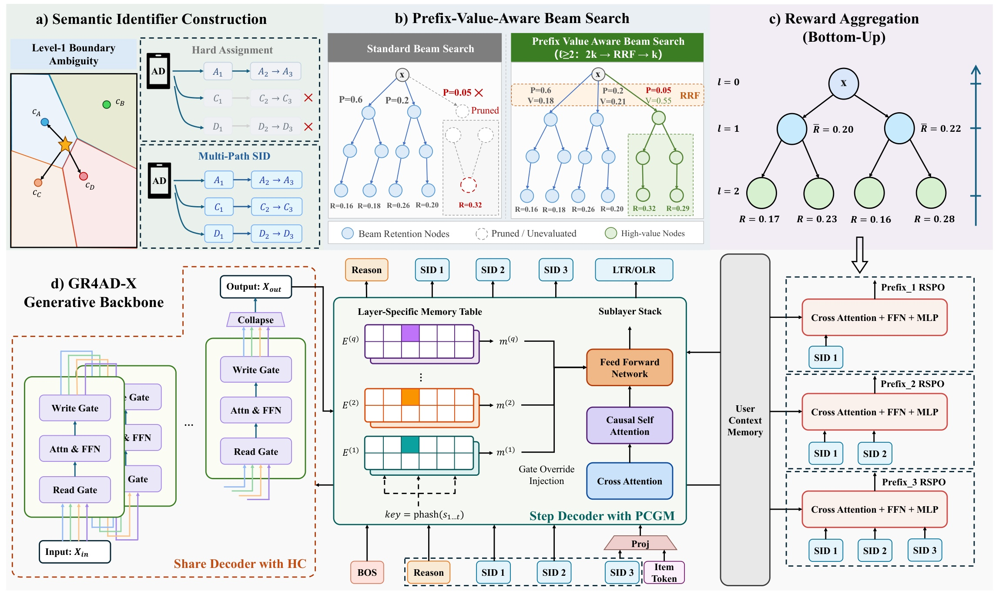
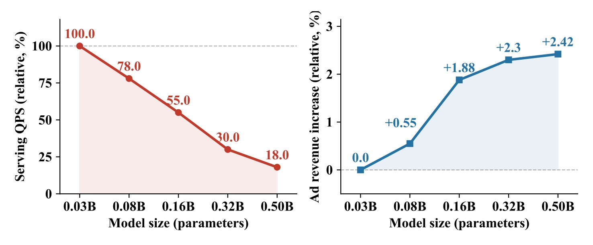
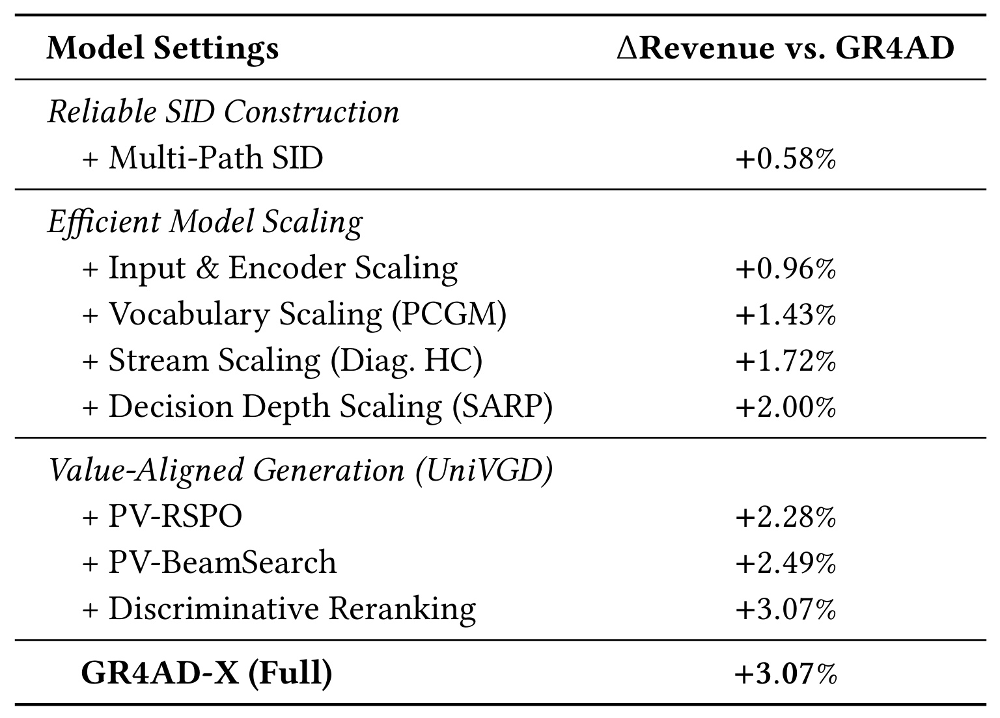
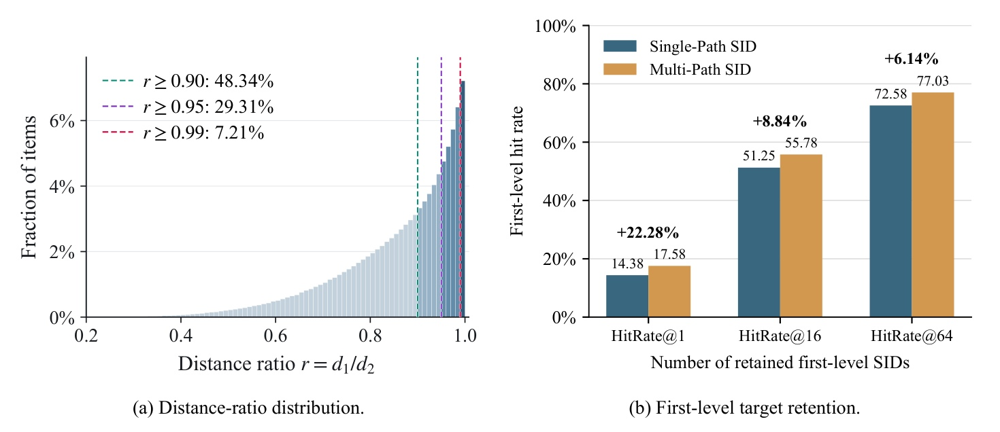
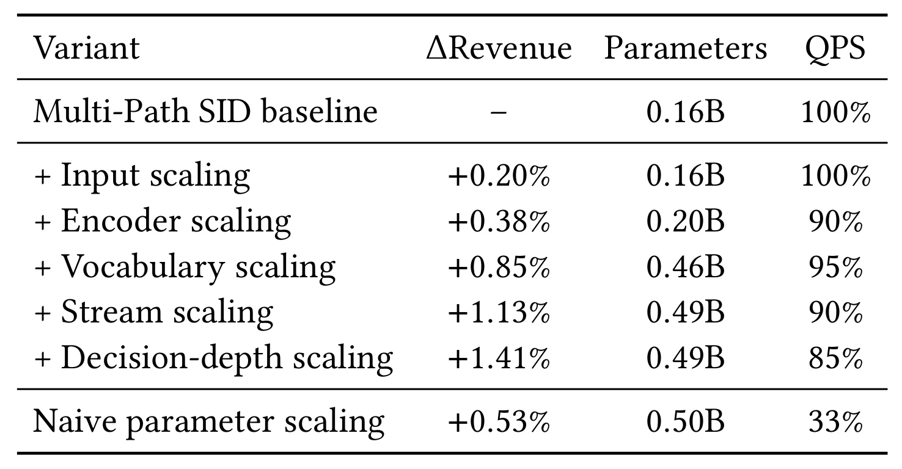
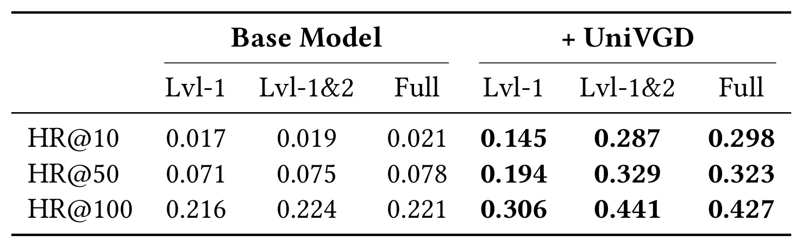

GR4AD-X：让广告生成路径更可靠、容量扩展更有效、候选排序更接近商业价值
这篇论文由快手的 Yatong Xiao、Yibo Sheng、Lixiang Wang、Mingjie Sun、Yunhao Sha、Pengfei Zhang、Shengyu Wang、Peng Wang、Wenjin Wu 和 Peng Jiang 撰写，研究对象是已部署 GR4AD 的生成式广告推荐链路。arXiv 首版公开时间为 2026 年 10 月 28 日，唯一论文入口为 arXiv:2610.38378，本轮访问日期为 11 月 2 日。本轮未核验到独立代码或项目发布入口，未重跑训练和线上实验。PDF 使用 WWW ’27 模板并保留 DOI 占位符，本文不据此宣称会议录用。
生成式广告推荐在生产中仍面临三个相连的限制：确定性的语义编号容易受聚类边界影响，直接扩大主干模型在严格服务约束下收入收益递减，序列级价值训练又难以给中间编号决策分配信用，使高价值广告可能在生成完整编号之前就被剪掉。
1. 背景和问题
生成式推荐把“从海量广告中找出候选”改写成“根据用户上下文生成广告的离散编号”。这里的编号不是完全任意的字符串，而是由语义表示量化得到的层级 SID。模型先输出粗粒度 token，再继续输出细粒度 token，完整序列通过索引解析回广告。这样的设计把原先独立的表示学习与检索决策连接起来，也让生成模型能够借用自回归训练、缓存和束搜索等工具。不过，用户最终看到的是广告，不是 token；在编号层面看起来合理的局部选择，未必对应最有商业价值的完整候选。本文沿着已上线系统继续改进，因此重点是生产链路中的具体失效环节，而不是再次论证生成式推荐是否可行。
第一个问题来自语义空间和离散搜索空间的连接。常规残差量化在第一层选最近的质心，这一步看起来只是一个局部几何决策，但它决定后续生成只能走哪棵子树。靠近两个质心边界的广告可能与二者距离非常接近，却只能被分配给一个粗编号。如果模型在束搜索第一步没有保留这个编号，后面的细粒度预测再准确也没有机会找回广告。这里的风险并非只有编码误差变大，而是一个连续空间中很小的距离变化，可能造成离散可达性的突然改变。把代码本做得更细也不自动解决这个问题，因为更多边界同样可能让相近广告落到不同分区。
Multi-Path SID 的动机因而是保留可替代的入口，而不是在每层无约束地产生更多路径。它只在最初的语义层保留多个可能质心，再分别走各自的残差量化轨迹。对同一个广告，多个合法 SID 都能解析回同一实体，模型可以从不同粗前缀到达它。这种冗余有两面性：它提高目标前缀存活的机会，也可能让多个路径占用同一个广告本可只占一个的 beam 位置。最终必须在广告级去重，并用线上收益检验路径冗余与候选多样性之间的净效果，不能只看到前缀命中率增加就断言最终候选集合一定更好。
第二个问题是容量应该增加在哪里。广告请求的输入包含用户画像、上下文、高基数离散特征和行为等异质信息；相同的参数增量放到不同位置，会引入不同的在线代价。扩大解码器宽度或层数增加每次自回归决策都要执行的稠密计算，而且在很多请求上都必须支付。相比之下，扩展由 SID 前缀索引的记忆表，可以增加存储容量而不同比例增加矩阵乘；增加输入信号也可以通过重分配序列预算保持长度。这些方案并非没有成本，只是计算、显存、索引和特征维护之间的支出结构不同。论文因此同时报告参数量与归一化 QPS，而不是只以模型规模说明扩展效率。
在这条生产链路里，第一层决策尤其特殊：预测第二个 SID token 时已有第一个编号作为条件，预测第一个 token 时却只有 BOS 和用户上下文。粗决策既重要又缺乏前缀信息，简单增加后续细层的能力未必能补救。SARP 在 BOS 与第一层 SID 之间加入一个连续推理位置，并用较粗语义原型监督它。这不是让模型输出一段自然语言思维链，也不是把目标广告的编号提前塞入推理输入；其推理向量只依赖 BOS 和用户状态，监督标签仅在训练时出现。需要区分这种计算深度扩展与输出编号深度扩展，前者增加一个中间计算位置，后者改变索引和解码结构。
第三个问题来自学习目标与最终价值的偏差。最大化日志里正例广告 SID 的生成概率，主要使模型拟合交互分布；广告平台还关心 eCPM 等商业信号，两者不在同一尺度上。一个生成概率较低的前缀，下面可能挂着很有价值的广告；如果只用概率剪枝，它们在完整物品级打分之前已经不可达。只在叶子上给序列奖励，又容易把后面某个错误决定的惩罚平均给所有前缀，使一个仍有潜力的粗分支被错误归责。UniVGD 将价值信号放到训练、剪枝和最终重排三个阶段，分别处理信用分配、搜索保留和物品比较，三者共享用户记忆和解码器，而不是把三个完全独立模型串起来。
本文值得读的地方还在于其边界较清楚。它优化的是快手广告生成候选链路，并报告相对已部署 GR4AD 的收入改变，不是公共数据集上从零训练的普遍模型排名。eCPM 本身包含平台对价值的估计，靠近它的排序不等于直接证明用户满意度、广告主长期回报或公平性都改善。生成更高价值候选也不能代替拍卖、过滤、预算控制和最终展示策略。对推荐研究者，最可迁移的是把表示可达性、容量位置与价值剪枝拆开检查；对大模型研究者，相关启发来自条件记忆、多流状态与中间监督，但它们在三层 SID 和固定 beam 的短输出设定中工作，不能直接外推到开放式长文本生成。
理解实验之前还要确认三个不同分母。动机图把零点零三十亿参数模型当作参照，容量表把零点一六十亿参数的 Multi-Path 系统当作参照，完整系统结果表则比较已部署 GR4AD。三者都使用“相对收入提升”措辞，但不是相同的相对值。后文既需要跟随原表读数，也需要把表之间的关系讲清楚：连续叠加的百分点差只说明相对于共同参照的累计差别，不是各模块在任意系统上都能独立获得的提升。用这种方式阅读，可以看到方法为何有工程吸引力，同时避免把分母切换和顺序实验误写成模型贡献的简单加法。
GR4AD 已经包含 LazyAR、动态 beam 和实时服务优化，本文是在这套基础上提出后续升级。因此低于一百毫秒的部署描述不能全部归因给 GR4AD-X 的新组件，生成式候选也并不取消下游排序与拍卖约束。分清继承的系统能力和本轮新增机制，才能判断新增收入与服务变化究竟对应什么对照。
2. 方法
2.1 Multi-Path SID的多目标训练与去重
令广告语义向量为初始残差，每层从代码本中找最近质心并减掉它，常规残差量化与首层多路径改动可合并写为：
符号解释：$e_i$ 是广告 $i$ 的语义 embedding，$r_i^{(l)}$ 是第 $l$ 层残差，$c_{l,k}$ 是该层第 $k$ 个代码质心，$s_l$ 为单路径选中的编号，$m$ 为首层保留路径数。每个首层候选 $j$ 都用 $e_i-c_{1,s_1^{(j)}}$ 初始化自己的下一层残差，再从第二层继续单路径量化。论文最终层沿用 GR4AD 对非语义广告特征的 hash 映射，因此同一广告的所有路径共享最后一个 token；这并非把全部三层都做成最近质心量化，也不是每层都分出 $m$ 支。部署使用三层 SID、两条首层路径，路径规模随 $m$ 线性增长。 对同一个正广告，训练同时覆盖全部合法路径：
符号解释：$x$ 为用户上下文，$L$ 为 SID 层数，$S_{<l}^{(j)}$ 为路径 $j$ 已给出的前缀，$\pi_\theta$ 是生成策略，$\alpha_j$ 为路径损失权重。各路径在同一次前向中打包成独立 SID block，blockwise causal mask 使每条路径能读取共享用户上下文和自身历史，却不能偷看另一条路径的 token。这样共享的是昂贵的用户表示计算，保留的是路径各自的自回归条件分布。推理仍按标准自回归方式生成，再通过多路径索引找到广告；同广告若被多次命中，只保留分数最高路径，避免重复实体进入最终候选。

Figure 2 是原论文的一个四面板组合图，需要把上方的检索路径与下方的共享模型一起读。左上角将边界广告到不同质心的可能入口画成并行路径：单路径中被灰掉的入口在多路径中仍可能保留。中上角比较概率束搜索与价值参与的束搜索，红色低概率分支在纯概率策略下会被剪掉，但它的叶子具有较高奖励；绿色框展示价值排序如何在放宽候选池后把它保住。右上角的叶子值从下向上按后代数量加权聚合，为每一层前缀构造可训练目标；这不是把子节点均值不分样本量地再平均。下半部分从用户上下文记忆出发，经过带多流残差的共享解码器，再进入有前缀条件记忆的逐步解码器，最后追加物品 token 执行判别重排。图中多个 RSPO head 读取同一用户记忆，但分别看不同深度的 SID 前缀，参数在路径之间共享。这个信息流说明三个改动不是互不相干的拼装：多路径改变可达入口，容量扩展改善用户与前缀表示，价值 head 又在训练和搜索之间复用。它也标出了成本仍然存在的位置，特别是放宽 beam 候选池、每层值预测以及最终额外一次判别解码，不能因为“共享 decoder”就认为服务开销为零。
图中小型树只用于解释信用与剪枝，实际 beam 宽度是五百一十二，第二层开始的暂存候选是其两倍。原图将 reason token 画在 BOS 后，也将 complete SID 的 memory 接到物品打分位置；这两个位置决定信息什么时候可用。模型不能在第一层 SID 尚未生成时查询完整 SID 的记忆，也不能在生成分支读取只在最终广告候选上才具备的 eCPM 相关特征。若复现时忽略这种时序，虽然输入特征可能更丰富，却会改变任务信息边界，不再是论文描述的同一生成流程。
2.2 面向服务预算的五维容量扩展
前两维扩展针对输入和编码器。作者从生产排序系统引入二十多个用户画像与上下文特征，按重要性重新分配序列预算，使总输入长度不变；关键高基数特征的 embedding 维度由十六增至六十四，并将常规 FFN 换为 SwiGLU。这里“长度不变”不代表特征维护成本不变，向量维度增大也会增加参数和计算。其余三维分别把新增能力放入前缀条件记忆、残差信息通路和首层决策前的计算位置，目的是避免所有容量都通过更宽更深的稠密主干实现。 PCGM 为每个 decoder layer 分配独立记忆表，并为不同长度的 SID 前缀建立索引。三元前缀的多项式 hash、逐层读取和门替换可写为：
符号解释：$\rho$ 是固定素数，$M$ 控制记忆表大小，$k_t$ 是已知长度为 $t$ 的前缀的 key；$E^{(q)}$ 是第 $q$ 个 decoder layer 的表，$m_t^{(q)}$ 为查得的向量，$h_t^{(q)}$ 为相应隐藏状态，$W_u^{(q)},W_d^{(q)}$ 是升降维矩阵，$\odot$ 表逐元素乘。层索引 $q$ 与 SID 层索引 $l$ 不同。PCGM 用查表向量替代稠密 FFN gate，从而同时增加参数记忆并减少部分稠密计算。第一层 SID 不使用它；预测第二层时只使用一元前缀，预测第三层时只用二元前缀，完整三元记忆留到 rank step。hash 碰撞、表驻留和不同前缀的访问热度仍需工程验证。 多流残差把用户与上下文状态扩展到四条并行 stream，但每个 attention 或 FFN 仍只执行一次。它先用输入相关 read gate 从多流状态得到单个表示，完成子层计算，再通过 write gate 写回，同时保留各流的残差部分：
符号解释：$Y$ 为四流状态，$H_{\mathrm{pre}}\in\mathbb R^{1\times n}$ 负责读取，$H_{\mathrm{post}}\in\mathbb R^{n\times1}$ 负责写入，$H_{\mathrm{res}}$ 为 $n\times n$ 对角残差矩阵，$n=4$，每个 gate 对同一 stream 的全部隐藏通道共享标量。门由展平后的多流状态经 RMSNorm 和可学习映射生成，read 与 residual 用 sigmoid，write 用两倍 sigmoid，最终经学习聚合压回原宽度。对角参数化没有任意 stream 间稠密混合，每个子层也没有复制四次；但多流激活、门计算与写回仍占存储和访存。这是扩展信息路径而非将所有计算完全免费并行化。 SARP 在 BOS 和首层 SID 之间增加连续 reason token，先从 BOS 状态得到其 embedding，再经 decoder 得到共享的 reason state，并将其投影到粗语义空间：
符号解释：$f_r$ 是可学习网络，$h_{\mathrm{BOS}}$ 和 $h_{\mathrm{reason}}$ 分别是 BOS 与 reason 位置状态，$W_r$ 是投影矩阵，$c'_v$ 为重新聚类后的粗原型，帽号表示单位范数向量。原始首层一万六千三百八十四个冻结质心重新聚成二百五十六个原型，同广告的相近首层路径在多数情况下对应同一粗标签 $a_i$，因此用广告级标签监督跨路径共享的 reason state。论文没有声称所有路径都必然映射同一原型，实践中应检查这个“多数”条件。
符号解释：$K'=256$ 为粗原型数，$\tau=1.0$ 为分类温度，$\lambda_{\mathrm{cos}}=0.1$ 平衡余弦项。前半项让模型区分粗语义类别，后半项直接拉近 reason 表示与目标原型。推理不需要目标广告或粗标签，reason token 只由当前用户状态生成，SID 输出深度仍为三层。它增加一个可监督的计算位置，试图让最早的粗分支决策得到更充分的用户语义准备，而不是把可读的推理解释作为输出目标。
2.3 UniVGD在生成前中后的价值对齐
生成前的 PV-RSPO 将 rollout 广告的奖励沿 SID 树向上聚合。每条路径对应的一个前缀获得其采样后代的平均奖励，值 head 则用前缀 embedding 与共享用户记忆预测该目标：
符号解释：$u$ 为用户，$p$ 为层级前缀，$j$ 为路径编号，$\mathcal S_u^{(j)}(p)$ 是 rollout 中路径 $j$ 具有该前缀的广告集合，$r(u,i)$ 是其奖励，$M_u$ 为用户记忆，$e_p$ 为前缀表示，$g_l$ 是 SID 层 $l$ 的轻量 head。只有采样后代非空时才计算这个均值。等价的自下而上递推必须按每个孩子的后代数量加权，不能让样本量不同的子树各占相同权重。这个值是当前采样集合的经验均值，不是对全部未观察广告的无偏全知价值，因此受 rollout 覆盖和奖励估计质量约束。
符号解释：$\mathcal P_l^{(j)}(u)$ 为该用户路径集合中去重后的第 $l$ 层前缀，$\beta_l$ 为层权重，$\alpha_j$ 沿用多路径训练权重，$\mathcal L_{\mathrm{RSPO}}$ 为文中引用 GR4AD 的 listwise 目标。它分别在每层、每条路径应用，再汇总梯度到共享表示；正文没有重新展开 RSPO 内部完整形式，不能自行补成 DPO 或标准 GRPO。与整条 SID 共用一个叶子奖励相比，前缀目标使浅层判断能够基于多个后代得到更局部的信用，避免一个末层错误把整条粗路径都判为无价值。 生成时即使分布已训练过，有限 beam 仍可能丢掉低概率高价值前缀。PV-BeamSearch 在第二层开始先按概率保留两倍宽的候选池，再结合概率名次和值名次：
符号解释：$k=512$ 是最终 beam 宽度，$\mathcal A_l$ 是按生成概率取得的临时池，$\mathcal B_l$ 是融合后保留的前缀，两个 rank 分别来自 log 生成概率和预测前缀值，$\kappa=k/4$ 为平滑常数。使用名次而非直接相加分数，是因为两种分数未校准到共同尺度。但只有先进入概率 top-$2k$ 的前缀才有资格被价值救回，机制并未消除概率筛选。第一层不使用判别融合，作者观察到太早引入值投票会选择合法广告很少的粗代码并降低解码有效性；这是本文明确报告的失败边界，不能把全层价值融合当作已验证的增强方案。 完整候选生成后，在共享 decoder 上增加 rank step。把完整 SID 表示与广告侧特征投影成一个 rank token，再读用户记忆得到物品表示，并分别训练 eCPM Lambda Loss head 与行为深度的 ordinal logistic head：
符号解释：$z_i^{(j)}$ 为完整 SID embedding，$f_i$ 拼接广告侧字段并包括 eCPM 相关信号，$W_{\mathrm{rk}},b_{\mathrm{rk}}$ 将其映射到 decoder token 空间，$h_i^{(j)}$ 为路径特定表示。两个 head 分别学习商业排序和逐步加深的行为链，损失在路径之间按 $\alpha_j$ 加权；推理使用广告级去重保留的最高分路径。两种目标尺度不同，所以最后再次融合名次。它利用原有用户记忆，无需重算整个用户上下文，但每个候选额外执行打分仍有服务成本；这种共享生成—判别结构也不能等同于用序列生成概率直接给物品排序。
3. 实验结果
3.1 生产设置与稠密扩容的代价
实验围绕快手真实广告系统展开，没有公开可下载的公共训练数据。附录说明平台服务超过四亿用户，服务优化后每张 NVIDIA L20 GPU 支持超过五百 QPS、端到端延迟低于一百毫秒。这是部署环境的整体描述，不能当成所有表中变体都以同一个 batch、相同请求特征达到这个绝对值。基线主干为零点一六十亿参数，三层 SID、首层一万六千三百八十四个代码，首层保留两路径；beam 五百一十二，放宽池一千零二十四。模型与搜索规模都较明确，有助于评估额外一层计算、记忆查找和前缀 head 的代价，仍不够复现完整生产实现。
附录 A 的线上协议是每个变体随机分配百分之五流量、评估七天。作者称报告的收入提升都达到百分之九十五显著性水平，对日指标使用双尾 t 检验并满足 $p<0.05$。这些是论文披露的协议，不能写成没有线上周期或没有随机流量分配。然而文章没有列每行效应的置信区间、具体 p 值、日样本量、随机化单位与多重检验处理，也未给组件交互的因子实验。七个日值上的统计检验与每条曝光独立抽样不是同一个检验口径，本轮不能根据汇总结果替作者计算一个更精确的区间。

Figure 1 的两个面板都以零点零三十亿参数的 Multi-Path 模型为参照，横轴是主干规模，左轴为归一化服务 QPS，右轴为相对收入增幅。参数从零点零三增加到零点零八、零点一六、零点三二和零点五十亿时，QPS 依次为百分之一百、七十八、五十五、三十、十八；收入增幅依次为零、百分之零点五五、一点八八、二点三零、二点四二。后面两次扩容仍增加收入，不能说扩容无效；问题是收入增加的边际越来越小，吞吐却持续大幅下降。从零点一六到零点五十亿，收入提升的共同参照读数只多零点五四个百分点，QPS 从五十五降至十八，相对该阶段约只剩三分之一。这个图揭示一种生产预算冲突，而不是普遍的模型 scaling law：横轴只有五个规模，结果来自本文的广告任务与服务实现。所有变体已启用 Multi-Path，因此不能拿图里“零点零三模型的零增益”当作原始 GR4AD 本身没有收益。后文 Table 2 重新归一化到零点一六模型，必须换分母后再比，不能把两张表中相同的百分号直接相减。
从该动机可以理解作者为什么不只追求更大参数。吞吐下降会影响同一硬件能承接多少在线请求，收入相对增幅则衡量该候选链路对商业指标的变化；两者还需要结合资源价格、流量分层和尾延迟形成真实成本收益判断。论文提供的归一化曲线支持寻找更有效的容量位置，但没有给资源成本折算后的利润，也没有报告所有变体在不同负载下的延迟曲线。因此这里可以说朴素扩容的性价比变差，不能断言具体业务一定应该停在某个参数点。
3.2 顺序叠加的完整系统收益

Table 1 从部署中的 GR4AD 出发，按顺序加入各组组件。Multi-Path SID 的累计提升为百分之零点五八；输入与编码器扩展后是零点九六；PCGM 后一点四三；多流后一点七二；SARP 后二点零零；再加 PV-RSPO、PV-BeamSearch 与判别重排，依次变成二点二八、二点四九和三点零七。Full 最后一行重复完整配置的三点零七，不是再加一次相同提升。这些数值都相对于同一个 GR4AD 分母，因此可以说容量组把累计 lift 从零点五八推到二点零零，相差一点四二个百分点，UniVGD 把二点零零推到三点零七，相差一点零七个百分点。但前一配置到后一配置的真实相对收入变化应按比值计算，不能把共同基线百分点差直接叫成对前一系统的相对百分比提升。例如最后重排的共同基线差是零点五八个百分点，而不是已证明在任意候选生成器上独立提高收入百分之零点五八。顺序实验还让后加入组件运行在前面已改变的分布上，包含可能的互补与交互，不能把每行差值当作一组可任意重排、独立相加的因果效应。
这张表最有价值的地方是展示完整链路的连续改善，而不是替每个模块建立普遍排名。判别重排是 UniVGD 三步里最大的共同基线增量，说明在已进行前缀训练和价值剪枝之后，物品级比较仍提供信息；它不能证明重排单独使用就优于另两步，更不能证明移除其他组件后仍保留相同增幅。Multi-Path 在相同 beam 宽度和解码深度下报告零点五八提升，说明多入口冗余在该设置下有正向净效应，但仍需要结合广告级去重、候选独特数量及实际延迟理解。文章称它不增加推理延迟，未给该比较的逐请求分位数，本轮将其保留为作者报告而非独立硬件验证。
3.3 边界歧义与首层目标保留

Figure 3 左图统计七百五十五点六万个广告 embedding 到最近与次近首层质心的距离比，横轴 $r=d_1/d_2$ 越接近一，说明两条入口在几何上越接近。至少百分之四十八点三四的广告满足 $r\ge0.90$，百分之二十九点三一满足 $r\ge0.95$，百分之七点二一满足 $r\ge0.99$；其中第二组约二百二十一万广告，其次近距离最多比最近距离大约百分之五点二六。这支持边界歧义不是极少数异常，但距离近并不自动表示两个质心对应同样的用户偏好，只能说明单路径几何选择可能脆弱。右图衡量目标广告至少一条合法首层 SID 是否进入概率 top-$K$，在一、十六、六十四三个宽度上，单路径到多路径分别是百分之十四点三八到十七点五八、五十一点二五到五十五点七八、七十二点五八到七十七点零三。图上标的二十二点二八、八点八四、六点一四是相对改善百分比，而不是绝对百分点；第一项的绝对差是三点二零个百分点。它测的是首层入口保留率，并没有要求完整 SID 最终命中，更不是收入指标。
因此该图提供的是机制证据：替代路径确实能增加粗前缀存活，而 Table 1 才给出这个改变在生产收入上的净效果。两类证据相互补充，却不能互相替代。若多路径不断增加，一方面目标有更多合法入口，另一方面相同广告会占据更多 beam，完整去重后的独特候选数可能下降。本文使用两路径，尚未提供一个覆盖许多路径数、相同独特广告预算的系统比较；读者不应从首层命中改善推断路径越多越好。复现时可同时统计首层覆盖、最终完整候选召回和去重后的实体多样性，检验几何动机是否沿整条检索链传递。
3.4 五维扩容与服务吞吐

Table 2 的参照已切换成零点一六十亿参数的 Multi-Path SID 系统，其 QPS 重新定义为百分之一百。先增加输入，参数不变、收入提高百分之零点二零且 QPS 不变；再扩编码器，规模到零点二十亿、累计收入零点三八、QPS 九十；PCGM 把参数增到零点四六十亿、收入零点八五、QPS 反而回到九十五；多流到零点四九十亿、收入一点一三、QPS 九十；SARP 后参数在表中精度下仍是零点四九十亿、收入一点四一、QPS 八十五。相比之下，朴素扩容到零点五十亿只有零点五三收入提升、QPS 三十三。接近总参数规模时，本文组合确实具有更好的已报告收入与吞吐位置，吞吐比约二点五八倍，但这不是它比零点一六基线更快：完整容量扩展仍损失百分之十五 QPS。PCGM 阶段从九十恢复到九十五与用查表替代稠密门投影的设计一致，不能仅凭这一个顺序对比断言所有记忆表都会加速。
这张表也限定了“高效扩容”的实际含义。它不保持每一行硬件成本完全一样，而是在更大容量下保留相对更多服务能力；新增的参数主要从密集计算转向条件访问的存储，仍会影响显存占用、带宽、hash 碰撞与索引热度。SARP 不显著增加报告精度下参数，却会增加决策前计算位置，QPS 从九十降到八十五，说明“参数没变”不等于没有在线代价。作者同时报告第一层 SID loss 约降低百分之三，方向与更充分的首层语义准备一致，但没有提供该损失变化的完整曲线与置信区间，不能把它单独当作收入增长的充分因果解释。各扩展维度都依赖已存在的前序组件，这一点与 Table 1 的实验限制相同。
3.5 商业价值对齐与搜索边界

Table 3 的 HR@$K$ 与 Figure 3 的首层目标命中虽然名字相近，定义却不同：这里先在同一请求的完整候选信息上，分别找 eCPM 最高和生成分数最高的 $K$ 个广告，计算两个集合的交集大小除以 $K$，再跨请求平均。Base 已包含除 UniVGD 外的其他 GR4AD-X 优化；第一层按概率排序，后两列在 UniVGD 配置中已使用 RRF beam-selection 分数，Full 明确不包含最终判别重排。Full HR@10 从零点零二一增到零点二九八，比例约十四点一九倍，绝对差零点二七七；这里不能写成点击准确率提高十四倍，也不能把最终重排效果算进这张表。HR@50 的 Full 是零点零七八到零点三二三，HR@100 是零点二二一到零点四二七。更细的层级比较显示，第一层 HR@10 从零点零一七到零点一四五，而推理时第一层尚未融合价值，所以作者将其解释为训练阶段前缀值监督改善生成分布的证据。这个对照有助于分开训练与搜索作用，但没有单独随机干预所有模块，仍需保持因果措辞克制。
后两层的集合重叠并非随深度严格增加：UniVGD 的 HR@50 从前两层的零点三二九到 Full 零点三二三，HR@100 从零点四四一到零点四二七。说明更深的完整决策仍可能引入排序变化，不能将表格概括成每层都越来越接近价值最优。eCPM 是平台估计的商业价值参照，模型更接近它不等于直接拥有广告实际收入的全知排序；奖励估计误差和反馈偏差都可能被价值 head 放大。论文还指出若在首层启用判别融合，解码有效性会明显下降，因此第二层才开始融合，价值信号不能无约束越早越强。
效率方面，正文第九页说明 UniVGD 在参数基本不变、额外一个 rank token 解码位置的设定下，保留其 Base 约百分之七十五 QPS，同时将相对 GR4AD 的累计收入由二点零零推到三点零七。这是对已经完成容量扩展系统的代价，不应与 Table 2 的百分之八十五直接当作同一分母。若只看新增参数几乎不变而忽略值打分与重排，会漏掉真实服务损失；如果没有相同负载的绝对延迟与资源成本数据，也不宜自行把两张表相乘后宣称一个未经报告的全系统 QPS。本文有生产收益证据，但对业务是否值得采用，仍需要把广告主指标、用户长期行为、预算约束与服务容量一起纳入评估。
4. 总结
GR4AD-X 最有价值的观点，是把生成式广告推荐的限制沿链路分成可达入口、可用容量和价值决策三个层次。Multi-Path SID 减少第一层硬分区造成的不可逆入口丢失；PCGM、多流与 SARP 将能力增量放到不同位置；UniVGD 再把叶子价值传播到前缀训练、有限 beam 剪枝和完整候选比较。它没有用一个统一分数模糊掉这些差别，而是让同一用户记忆和 decoder 在不同阶段提供不同信息。对工业系统，这种分解有助于明确该追加的是存储、输入特征、决策深度还是价值监督，避免遇到收益瓶颈就只扩大主干。
工程迁移应先检查信息时序。首层 SID 不具备前缀，PCGM 不能提前读取尚未生成的编号；reason token 不能访问目标广告标签；rank token 才能接入完整广告侧价值特征。多路径训练还必须有真正的 blockwise causal mask，跨路径如果互相看见目标会改变训练条件。对大模型任务，条件记忆与连续中间计算位置可以形成研究启发，但开放式生成的长输出、可变合法性和用户目标并未在本文验证。对推荐任务，则应把首层命中、完整实体召回、去重多样性、商业收益和服务容量分别记录，不能用其中一项取代全部验收。
局限至少有五个方面。第一，全部数据来自内部广告系统，公开材料不足以独立复现生产收益，代码也未核验到公开入口。第二，组件按顺序叠加，收入差值受前序系统影响，缺少可识别交互的完整因子对照。第三，附录虽然披露百分之五流量、七天评估和日指标 t 检验，但未提供每行置信区间、具体 p 值、多重检验或长期稳定性结果，不能把统计显著等同业务收益没有不确定性。第四，eCPM 与收入是商业口径，不涵盖用户福利、广告生态公平或长期广告主回报。第五，多入口与条件记忆增加索引、存储和一致性维护的复杂度；服务吞吐的相对比较不足以说明所有硬件和负载上的成本。
后续应先复现多路径的净效果：固定 beam、代码本和唯一广告预算，分别测前缀覆盖、完整召回、重复路径占用与线上延迟，判断收益来自更可靠入口还是隐含预算改变。然后把五维扩容拆成与前序系统同配置的对照，记录显存、访问带宽、GPU 时间、首层 loss 和收入，而不是只比较总参数；尤其检查 PCGM 的 hash 碰撞和热门前缀对缓存的影响。第三，重新评估价值融合的启动层与候选池宽度，比较合法率、eCPM 重叠、收入和广告主长期指标，确认第二层开始是否仍是自有业务的合适边界。第四，补充分流实验的日级原始统计及更长周期，观察组件效果是否随广告分布、冷启动和奖励模型更新而变化。
我更倾向把这篇论文作为生产优化的设计记录与实验问题清单，而不是可复制的固定收益配方。完整系统相对已部署 GR4AD 的百分之三点零七收入提升，是本文给出的可核验作者报告；它既不能与动机图的相对增幅相加，也不能由局部的十四倍排序重叠推导出来。真正可以带走的是将最早的检索不可逆性、容量扩展的服务代价和价值信号的适用阶段逐一检验，这样在收益出现或回退时，能够追踪到具体发生变化的环节。